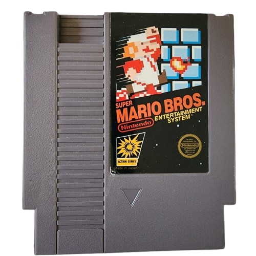
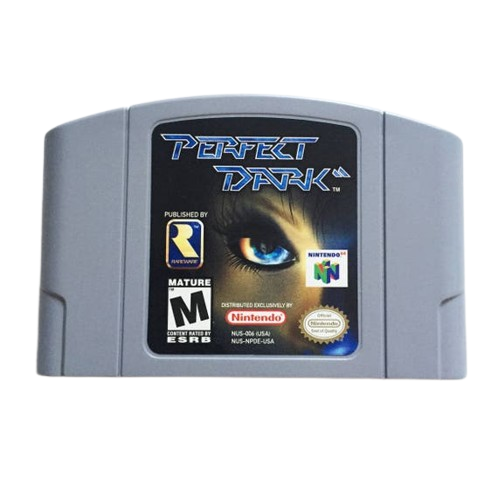
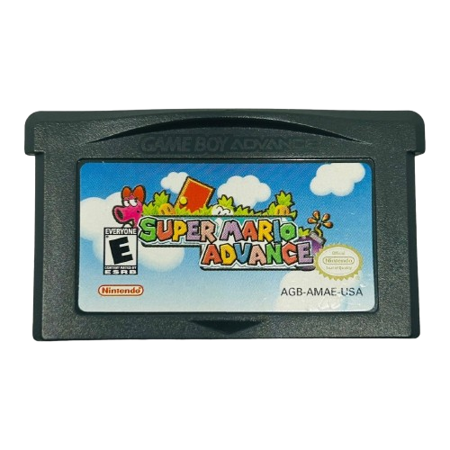
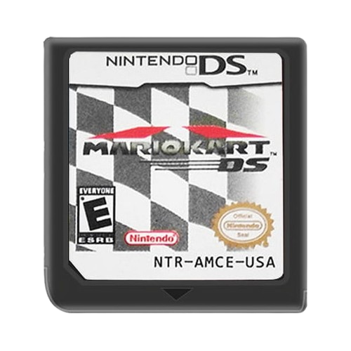
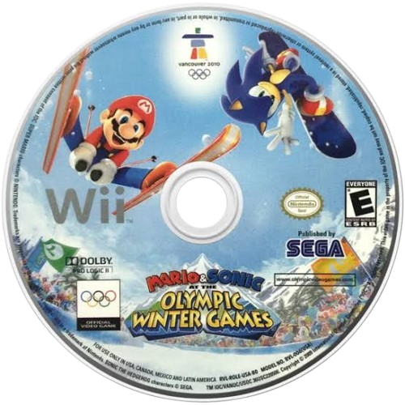

My Tech Issue Guide
Game Preservation
What is Game Preservation?
It's the process and effort of protecting, archiving, and maintaining the orginal code and softwear of older games as well as perserving the hardware they were made for.
Why is it important?
With newer games come out every year older games are forgotten about until the newest system cames out and a classics game bundle.
Big companies like Sony will no longer release physical game dics with other game companies slowly folling suit.
Here is a very good source that has a ton of game presentation sites on it! Learn More Here





How can these games be preserved?
Physical media emulators, digital archives, and more!
Emulations
Emulation is easiest since there are many websites that hosts these games for anyone to play Classic Game Zone
Other sites for emulation have just the game files and the emulators that you can download Vimm's Lair
Digital Archives
Digital archives is the process of keeping documents, images, sounds, and videos. Here are some sites Video Game History Foundation, Internet Archives, and The Strong National Museum of Play
Physical media and hardware
Getting physial dics can be a challenge and getting their hardware is an even harder one! Some sources I use are Ebay, Facebook Marketplace, GameStop, I also go to a lot of garage sales as well as local game stores!
How is this impacted with the prevalence of AI?
AI
With AI being introduced to the gaming industry compaines like Xbox are introducing AI to classic games so their code can ported over to newer consoles.
Microsoft Gaming CEO Phil Spencer states "One of the things we care a lot about at Xbox is game preservation, and I think about an opportunity to have models learn about older games, games that were maybe tied to unique pieces of hardware, where the engine on that hardware, time will erode the amount of hardware that's out there that can actually play game,". You can learn more about this Xbox could use Ai to preserve classic games
There's also some pushback on using AI and vibe-coding for game preservation for example coder Dustin Hubbard wanted to scan hundreds of scanned Japanese gaming magazines. Once the project was released many people of the Gaming Alexandria community were disappointed to learn that funds from pateron were being used to fund an AI that was prone to making errors in the transcrips for these magazines. Here's the full article New "vibe coded" AI translation tool
How you can get involved!
Forums
This is where people on the internet get together and discuss ideas, share information, debate issues, and ask or answer questions for example Vintage Computer Federation Forums, ResetEra, and NeoGAF
Communities
YouTube is the best place to look for a community of other gamers! There are many youtubers that post videos about retro games and this also keeping these games alive for other people to learn about! Some channels for example Cinemassacre,Grand POOBear, and Dungeon Chill